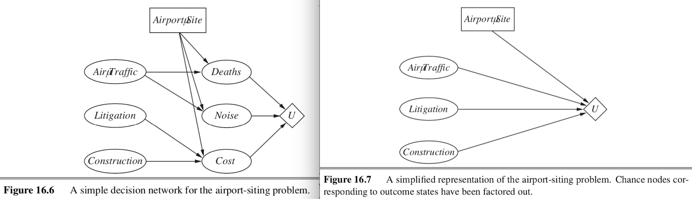
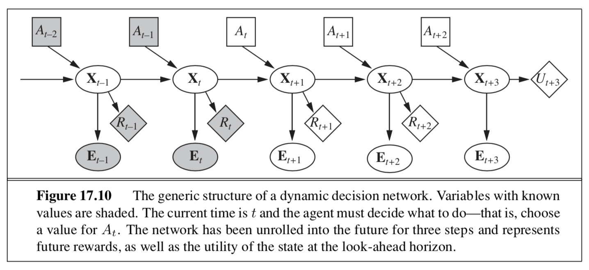

decisions, rl
view markdownSome notes on decision theory based on Berkeley’s CS 188 course and “Artificial Intelligence” Russel & Norvig 3rd Edition
game trees - R&N 5.2-5.5
- like search (adversarial search)
- minimax algorithm
- ply - half a move in a tree
- for multiplayer, the backed-up value of a node n is the vector of the successor state with the highest value for the player choosing at n
- time complexity - $O(b^m)$
- space complexity - $O(bm)$ or even $O(m)$
- alpha-beta pruning cuts in half the exponential depth
- once we have found out enough about n, we can prune it
- depends on move-ordering
- might want to explore best moves = killer moves first
- transposition table can hash different movesets that are just transpositions of each other
- imperfect real-time decisions
- can evaluate nodes with a heuristic and cutoff before reaching goal
- heuristic uses features
- want quiescent search - consider if something dramatic will happen in the next ply
- horizon effect - a position is bad but isn’t apparent for a few moves
- singular extension - allow searching for certain specific moves that are always good at deeper depths
- forward pruning - ignore some branches
- beam search - consider only n best moves
- PROBCUT prunes some more
- search vs lookup
- often just use lookup in the beginning
- program can solve and just lookup endgames
- stochastic games
- include chance nodes
- change minimax to expectiminimax
- $O(b^m numRolls^m)$
- cutoff evaluation function is sensitive to scaling - evaluation function must be a positive linear transformation of the probability of winning from a position
- can do alpha-beta pruning analog if we assume evaluation function is bounded in some range
- alternatively, could simulate games with Monte Carlo simulation
utilities / decision theory – R&N 16.1-16.3, mazzonni quant finance book
- lottery - any function of a random variable
- utility function - lottery that satisfiers certain properties (e.g. transitivity)
- expected utility = von Neumann-Morgenstern utility
- goal: maximize utility by taking actions (focus on single actions)
- utility function U(s) gives utility of a state
- actions are probabilistic: $P[RESULT(a)=s’ \vert a,e]$
- s - state, e - observations, a - action
- soln: pick action with maximum expected utility
- expected utility $EU(a\vert e) = \sum_{s’} P(RESULT(a)=s’ \vert a,e) U(s’)$
- notation
- A>B - agent prefers A over B
- A~B - agent is indifferent between A and B
- preference relation has 6 axioms of utility theory
- orderability - A>B, A~B, or A<B
- transitivity
- continuity
- substitutability - can do algebra with preference eqns
- monotonicity - if A>B then must prefer higher probability of A than B
- decomposability - 2 consecutive lotteries can be compressed into single equivalent lottery
- these axioms yield a utility function
- isn’t unique (ex. affine transformation yields new utility function)
- value function = ordinal utility function - sometimes ranking, numbers not needed
- agent might not be explicitly maximizing the utility function
utility functions
- preference elicitation - finds utility function
- normalized utility to have min and max value
- assess utility of s by asking agent to choose between s and $(p: \min, (1-p): \max)$
- people have complicated utility functions
- ex. micromort - one in a million chance of death
- ex. QALY - quality-adjusted life year
- risk
- agents exhibits monotonic preference for more money
- gambling has expected monetary value = EMV
- risk averse = when utility of money is sublinear
- risk premium = value agent will accept in lieu of lottery = certainty equivalent= insurance premium
- risk-neutral = linear
- risk-seeking = supralinear
- absolute risk aversion $ARA(x) = - \frac{u’‘(x)}{u’(x)} $ : higher is more risk averse
- relative risk aversion $ARA(x) = - \frac{x \cdot u’‘(x)}{u’(x)} $
- optimizer’s curse - tendency for E[utility] to be too high because we keep picking high utility randomness
- normative theory - how idealized agents work
- descriptive theory - how actual agents work
- certainty effect - people are drawn to things that are certain
- ambiguity aversion
- framing effect - wording can influence people’s judgements
- anchoring effect - buy middle-tier wine because expensive is there
decision theory / VPI – R&N 16.5 & 16.6
- note: here we are just making 1 decision
- decision network (sometimes called influence diagram)
- chance nodes - represent RVs (like BN)
- decision nodes - points where decision maker has a choice of actions
- utility nodes - represent agent’s utility function
- can ignore chance nodes
- then action-utility function = Q-function maps directly from actions to utility

- evaluation
- set evidence
- for each possible value of decision node
- set decision node to that value
- calculate probabilities of parents of utility node
- calculate resulting utility
- return action with highest utility
the value of information
- information value theory - enables agent to choose what info to acquire
- observations only affect agent’s belief state
- value of info = difference in best expected value with/without info
-
maximum $EU(\alpha e) = \underset{a}{\max} \sum_{s’} P(Result(a)=s’ a, e) U(s’)$
- value of perfect information VPI - assume we can obtain exact evidence for a variable (ex. variable $T=t$)
-
$VPI(T) = \mathbb{E}_{T}\left[ EU(\alpha e, T) \right] - \underbrace{EU(\alpha \vert e)}_{\text{original EU}}$ - first term expands to $\sum_t P(T=t \vert e) \cdot EU(\alpha \vert e, T=t) $
- within each of these EU, we take a max over actions
- VPI not linearly additive, but is order-independent
- intuition
- info is more valuable when it is likely to cause a change of plan
- info is more valuable when the new plan will be much better than the old plan
-
- information-gathering agent
- myopic - greedily obtain evidence which yields highest VPI until some threshold
- conditional plan - considers more things
mdps and rl - R&N 17.1-17.4
- sequences of actions
- fully observable - agent knows its state
- markov decision process - all these things are given
- set of states s
- set of actions a
- stochastic transition model $P(s’ \vert s,a)$
- reward function R(s)
- utility aggregates rewards, for models more complex than mdps reward can be a function of past sequences of actions / observations
- want policy $\pi (s)$ - what action to do in state s
- optimal policy yields highest expected utlity
- optimizing MDP - multiattribute utility theory
- could sum rewards, but results are infinite
- instead define objective function (maps infinite sequences of rewards to single real numbers)
- ex. discounting to prefer earlier rewards (most common)
- discount reward n steps away by $\gamma^n, 0<\gamma<1$
- ex. set a finite horizon and sum rewards
- optimal action in a given state could change over time = nonstationary
- ex. average reward rate per time step
- ex. agent is guaranteed to get to terminal state eventually - proper policy
- ex. discounting to prefer earlier rewards (most common)
- expected utility executing $\pi$: $U^\pi (s) = \mathbb E_{s_1,…,s_t}\left[\sum_t \gamma^t R(s_t)\right]$
- when we use discounted utilities, $\pi$ is independent of starting state
- $\pi^*(s) = \underset{\pi}{argmax} : U^\pi (s) = \underset{a}{argmax} \sum_{s’} P(s’ \vert s,a) U’(s)$
- experience replay: instead of learning from samples one by one, want to reduce correlation between subsequent samples
- take a large batch of samples and sample randomly from it, rather than going sequentially
value iteration
- value iteration - calculates utility of each state and uses utilities to find optimal policy
- bellman eqn: $U(s) = R(s) + \gamma : \underset{a}{\max} \sum_{s’} P(s’ \vert s, a) U(s’)$
- start with arbitrary utilities
- recalculate several times with Bellman update to approximate solns to bellman eqn
- value iteration eventually converges
- contraction - function that brings variables together
- contraction only has 1 fixed point
- Bellman update is a contraction on the space of utility vectors and therefore converges
- error is reduced by factor of $\gamma$ each iteration
- also, terminating condition - if $ \vert \vert U_{i+1}-U_i \vert \vert < \epsilon (1-\gamma) / \gamma$ then $ \vert \vert U_{i+1}-U \vert \vert <\epsilon$
- what actually matters is policy loss $ \vert \vert U^{\pi_i}-U \vert \vert $ - the most the agent can lose by executing $\pi_i$ instead of the optimal policy $\pi^*$
- if $ \vert \vert U_i -U \vert \vert < \epsilon$ then $ \vert \vert U^{\pi_i} - U \vert \vert < 2\epsilon \gamma / (1-\gamma)$
- contraction - function that brings variables together
policy iteration
- another way to find optimal policies
- policy evaluation - given a policy $\pi_i$, calculate $U_i=U^{\pi_i}$, the utility of each state if $\pi_i$ were to be executed
- like value iteration, but with a set policy so there’s no max
- $U_i(s) = R(s) + \gamma : \sum_{s’} P(s’ \vert s, \pi_i(s)) U_i(s’)$
- can solve exactly for small spaces, or approximate (set of lin. eqs.)
- policy improvement - calculate a new MEU policy $\pi_{i+1}$ using $U_i$
- same as above, just $\pi^*(s) = \underset{\pi}{argmax} : U^\pi (s) = \underset{a}{argmax} \sum_{s’} P(s’ \vert s,a) U’(s)$
- policy evaluation - given a policy $\pi_i$, calculate $U_i=U^{\pi_i}$, the utility of each state if $\pi_i$ were to be executed
- asynchronous policy iteration - don’t have to update all states at once
partially observable markov decision processes (POMDP)
-
agent is not sure what state it’s in
-
same elements but add sensor model $P(e \vert s)$
- have distr $b(s)$ for belief states
- updates like the HMM: $b’(s’) = \alpha P(e \vert s’) \sum_s P(s’ \vert s, a) b(s)$
- changes based on observations
-
optimal action depends only on the agent’s current belief state
- use belief states as the states of an MDP and solve as before
- changes because state space is now continuous
- value iteration
- expected utility of executing p in belief state is just $b \cdot \alpha_p$ (dot product)
- $U(b) = U^{\pi^*}(b)=\underset{p}{\max} : b \cdot \alpha_p$
- belief space is continuous [0, 1] so we represent it as piecewise linear, and store these discrete lines in memory
- do this by iterating and keeping any values that are optimal at some point
- remove dominated plans - generally this is far too inefficient
- belief space is continuous [0, 1] so we represent it as piecewise linear, and store these discrete lines in memory
- dynamic decision network - online agent

reinforcement learning – R&N 21.1-21.6
- reinforcement learning - use observed rewards to learn optimal policy for the environment
-
in ch 17, agent had model of environment (P(s’ s, a) and R(s))
-
- 2 problems
- passive - given $\pi$, learn $U^\pi (s)$
- active - explore states to find utilities and exploit to get highest reward
- 2 model types, 3 agent designs
-
model-based: can predict next state/reward before taking action (for MDP, requires learning $P(s’ s,a)$) - utility-based agent - learns utility function on states
- requires model of the environment
- utility-based agent - learns utility function on states
- model-free
- Q-learning agent: learns action-utility function = Q-function maps actions $\to$ utility
- reflex agent: learns policy that maps directly from states to actions
-
passive reinforcement learning
-
given policy $\pi$, learn $U^\pi (s) = \mathbb E\left[ \sum_{t=0}^{\infty} \gamma^t R(S_t)\right]$
- like policy evaluation, but transition model / reward function are unknown
- direct utility estimation: treat states independently
- run trials to sample utility
- average to get expected total reward for each state = expected total reward from each state
-
adaptive dynamic programming (ADP) - sample to estimate transition model $P(s’ s, a)$ and rewards $R(s)$, then plug into Bellman eqn to find $U^\pi(s)$ (plug in at each step) - we might want to enforce a prior on the model (two ways)
- Bayesian reinforcement learning - assume a prior $P(h)$ on transition model h
- use prior to calculate $P(h \vert e)$
-
use $P(h e)$ to calculate optimal policy: $\pi^* = \underset{\pi}{argmax} \sum_h P(h \vert e) u_h^\pi$
- $u_h^\pi$= expected utility over all possible start states, obtained by executing policy $\pi$ in model h
- give best outcome in the worst case over H (from robust control theory)
- $\pi^* = \underset{\pi}{argmax}: \underset{h}{\min} : u_h^\pi$
- Bayesian reinforcement learning - assume a prior $P(h)$ on transition model h
- we might want to enforce a prior on the model (two ways)
- temporal-difference learning - adjust utility estimates towards local equilibrium for correct utilities
- like an approximation of ADP
- when we transition $s \to s’$, update $U^\pi(s) = U^\pi (s) + \alpha \left[R(s) - U^\pi (s) + \gamma :U^\pi (s’) \right]$
- $\alpha$ should decrease over time to converge
- prioritized sweeping - prefers to make adjustments to states whose likely successors have just undergone a large adjustment in their own utility estimates
- speeds things up
active reinforcement learning
-
no longer following set policy
-
explore states to find their utilities and exploit model to get highest reward
-
must explore all actions, not just those in the policy
-
-
bandit problems - determining exploration policy
- n-armed bandit - pulling n levelers on a slot machine, each with different distr.
- Gittins index - function of number of pulls / payoff
-
coorect schemes should be GLIE - greedy in the limit of infinite exploration - visits all states infinitely, but eventually become greedy
agent examples
- ex. choose random action $1/t$ of the time
- ex. active adp agent
- give optimistic utility to relatively unexplored states
- uses exploration function f(u, numTimesVisited) around the sum in the bellman eqn
- high utilities will propagate
- ex. active TD agent
- now must learn transitions (same as adp)
- update rule same as passive TD
learning action-utility function
- $U(s) = \underset{a}{\max} : Q(s,a)$
-
ADP version: $Q(s, a) = R(s) + \gamma \sum_{s’} P(s’ s, a) \underset{a’}{\max} Q(s’, a’)$ - TD version: $Q(s,a) = Q(s,a) + \alpha [R(s) - Q(s,a) + \gamma : \underset{a’}{\max} Q(s’, a’)]$ - this is what is usually referred to as Q-learning
-
- SARSA (state-action-reward-state-action) is related: $Q(s,a) = Q(s,a) + \alpha [R(s) + \gamma : Q(s’, a’) - Q(s,a) ]$
- here, a’ is action actually taken
- Q-learning is off-policy (only uses best Q-value)
- more flexible
-
SARSA is on-policy (pays attention to actual policy being followed)
- can approximate Q-function with something other than a lookup table
- ex. linear function of parameters $\hat{U}_\theta(s) = \theta_1f_1(s) + … + \theta_n f_n(s)$
- can learn params online with delta rule = wildrow-hoff rule: $\theta_i = \theta - \alpha : \frac{\partial Loss}{\partial \theta_i}$
- ex. linear function of parameters $\hat{U}_\theta(s) = \theta_1f_1(s) + … + \theta_n f_n(s)$
policy search
- keep twiddling the policy as long as it improves, then stop
- store one Q-function (parameterized by $\theta$) for each action
- ex. $\pi(s) = \underset{a}{\max} : \hat{Q}_\theta (s,a)$
- this is discontinunous, instead often use stochastic policy representation (ex. softmax for $\pi_\theta (s,a)$)
- learn $\theta$ that results in good performance
- Q-learning learns actual Q* function - could be different (scaling factor etc.)
- to find $\pi$ maximize policy value $p(\theta) = $ expected reward executing $\pi_\theta$
- could do this with sgd using policy gradient
- when environment/policy is stochastic, more difficult
- could sample mutiple times to compute gradient
- REINFORCE algorithm - could approximate gradient at $\theta$ by just sampling at $\theta$: $\nabla_\theta p(\theta) \approx \frac{1}{N} \sum_{j=1}^N \frac{(\nabla_\theta \pi_\theta (s, a_j)) R_j (s)}{\pi_\theta (s, a_j)}$
- PEGASUS - correlated sampling - ex. 2 blackjack programs would both be dealt same hands - want to see different policies on same things
planning
- Efficient Learning in Cellular Simultaneous Recurrent Neural Networks - The Case of Maze Navigation Problem (ilin et al. 2007) - explored connections between planning algorithms and recurrent NNs
- Value Iteration Networks (tamar…levine, & abbeel, 2017)
- represent value iteration as a fully differentiable DNN using recurrence